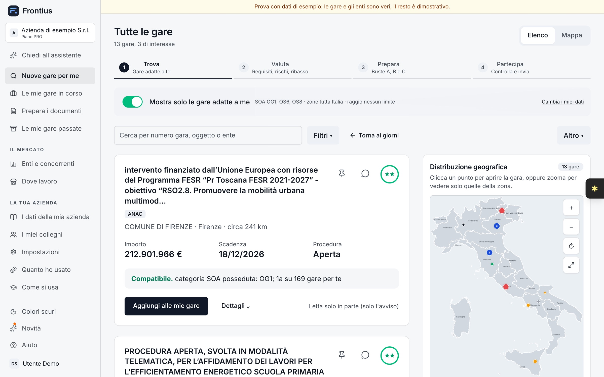
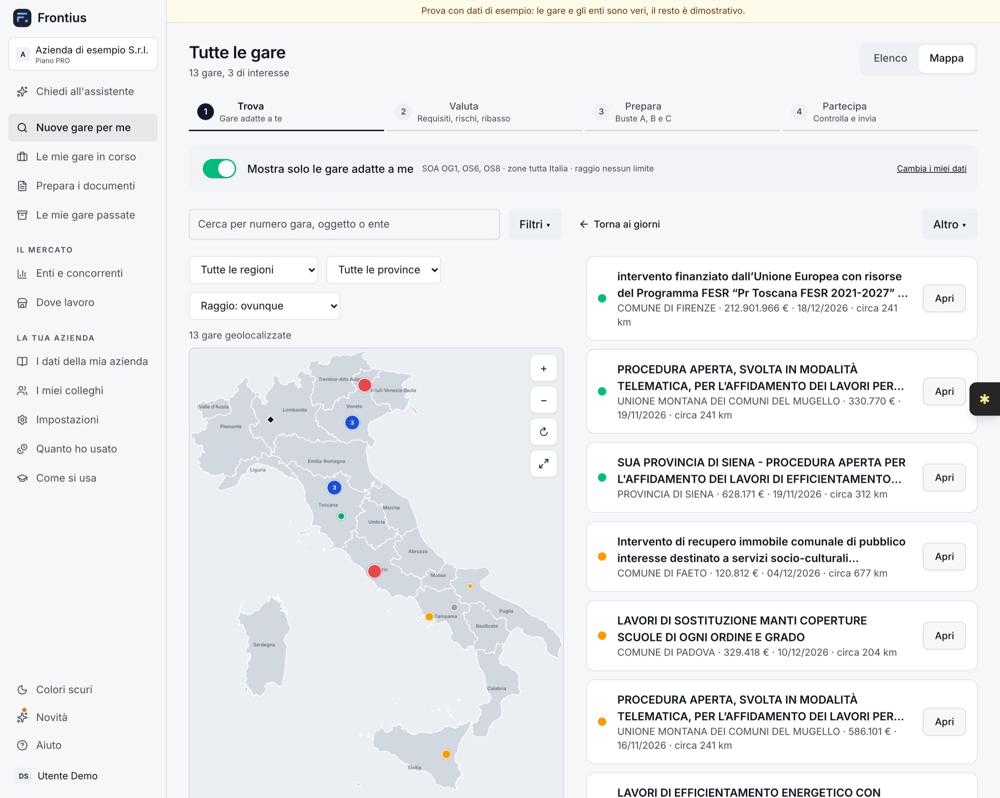
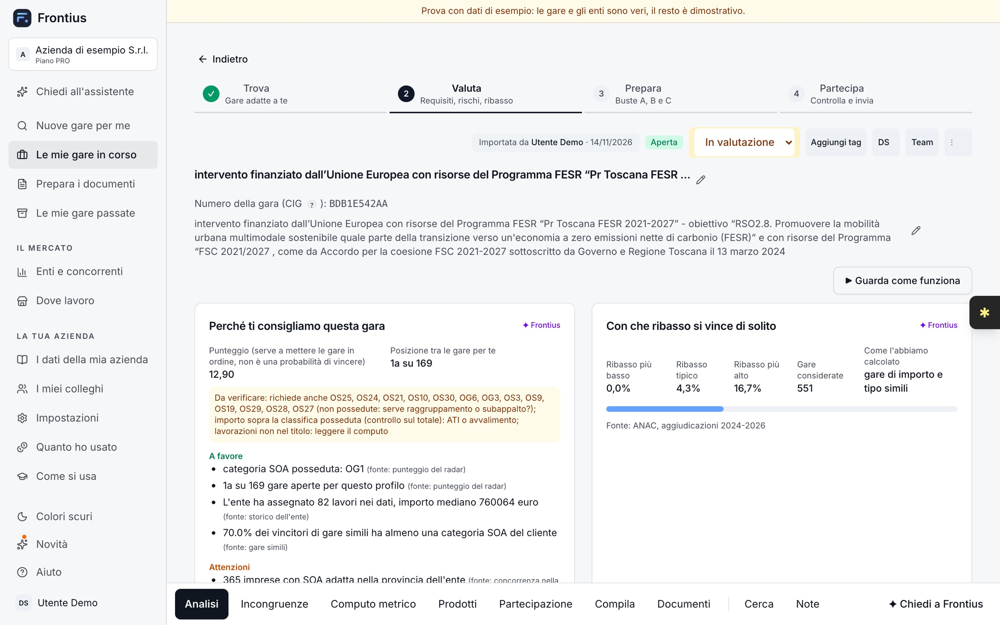
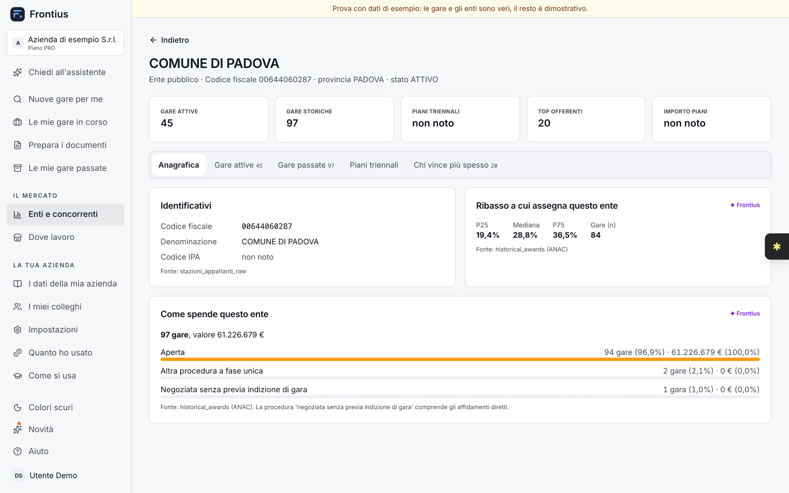
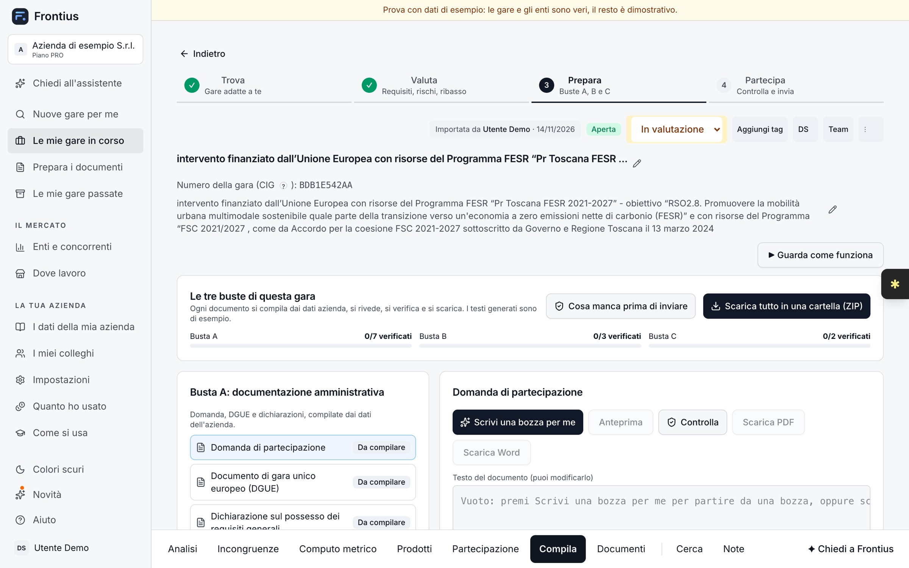

Come si fa oggi
- Apri i portali uno dopo l'altro e cerchi le gare nuove.
- Scarichi i bandi e scorri decine di pagine per capire se ti riguardano.
- Nel dubbio le tieni tutte. Intanto in cantiere ti cercano.
- Scopri che una gara giusta è scaduta ieri.
Gestionale con intelligenza artificiale per le gare di lavori
Frontius trova le gare adatte alla tua impresa, legge bandi e capitolati, ti dice con che ribasso si sono vinte gare simili e prepara le buste da rivedere. Tu decidi e firmi.
Copre le categorie SOA, generali e specialistiche. Vedi le categorie


Una mattina in ufficio gare
Esempio di giornata, per far capire la differenza: i tempi cambiano da impresa a impresa.
Cosa trovi solo qui
Ogni gara adatta a te è un punto sulla mappa: dove sta, a quanti chilometri dai tuoi cantieri, di che importo. Ti muovi con le dita, come su Google Maps.
Con che ribasso si sono vinte gare come questa: la fascia in cui cade la metà delle vittorie, con il numero di gare su cui è calcolata. Dato ANAC, non un'opinione.

Per ogni ente: quante gare ha fatto, con che ribassi, chi vince di solito, come spende. Arrivi alla gara sapendo già con chi hai a che fare.

La scheda della gara
Sai prima se la gara ti conviene, non solo se puoi farla.
Ipotesi: ribasso 12,5%, lavori costanti in 180 giorni, costi pari al 90% dei lavori, pagamento 30 giorni dopo ogni stato di avanzamento.
La scheda completa di ogni gara te la mostriamo nella demo.
Il gestionale
Segui una gara dalla prima segnalazione fino alla busta pronta. Le carte le fa Frontius, le scelte e la firma restano tue.
Ti arriva
Frontius controlla ogni giorno le gare di lavori pubblicate in Italia (la gran parte di quelle con CIG) e ti mostra solo quelle adatte: categoria SOA, zona e importo. In elenco o sulla mappa d'Italia.
Decidi
Frontius legge i documenti della gara e ti segnala requisiti, penali, sopralluogo e contraddizioni, con la fonte di ogni dato. Se un dato non c'è, scrive "non noto": non lo inventa. E ti mostra con che ribasso si vincono di solito gare simili.
Ti prepara
Frontius prepara la documentazione amministrativa dai dati della tua azienda, una bozza di relazione tecnica e l'offerta economica. Li scarichi in Word, Excel e PDF, con carta intestata e cartelle in ordine.

Invii tu
Prima dell'invio Frontius controlla che non manchi nulla. Non invia mai niente da solo: la decisione e la firma restano tue. Poi la gara passa nell'archivio, e impari da quelle vinte e da quelle perse.
Il ribasso
Dati ANAC · Stima, non certezza
Immagina di aprire una gara e vedere subito dove, di solito, si vince: la fascia di ribasso delle gare simili e quella dell'ente che la bandisce, con il numero di gare su cui si basa. Non è una promessa di vittoria: è partire dai numeri veri invece che da una sensazione.
La fascia ti dice dove si è vinto davvero. Il numero di gare e la fonte sono sempre scritti. Se i dati sono pochi, te lo diciamo.
Domande
Hai altre domande? Le vediamo insieme nella demo.
Richiedi una demoUn servizio di segnalazione ti manda l'elenco e il resto lo fai tu. Frontius sceglie quelle adatte alla tua impresa, ti spiega perché e prepara le bozze dell'offerta.
Legge bando, disciplinare e capitolato e controlla requisiti e condizioni su 15 punti. Ti dice se la gara fa per te e cosa va verificato. Poi prepara le bozze di busta amministrativa, offerta tecnica e offerta economica, e ti mostra i ribassi con cui si sono vinte gare simili.
Un assistente generico risponde a quello che gli chiedi. Frontius parte dai dati della tua impresa e dalle regole del Codice degli appalti: cerca le gare, le controlla su 15 punti e prepara i documenti in Word ed Excel. I tuoi dati restano riservati.
Le gare arrivano già lette e controllate, con i motivi e i punti da verificare. Le bozze arrivano pronte da rivedere in Word ed Excel. Il tuo ufficio tecnico si concentra sulle decisioni e sul cantiere.
I tuoi dati li vede solo la tua impresa: un'altra impresa che usa Frontius non può vedere le tue offerte né i tuoi prezzi. Dove e come sono conservati, e l'accordo di riservatezza, te li spieghiamo nella demo prima che tu carichi qualcosa.
Scegli a quali gare partecipare, controlli le bozze, procuri la garanzia se la gara la chiede, firmi e invii l'offerta. Le decisioni restano tue.
Sì. Frontius parte dalle categorie SOA che hai, generali (OG) e specialistiche (OS), e ti segnala le gare in cui sei qualificato.
Oggi ti dice quali categorie ti mancano e se puoi coprirle con subappalto, avvalimento o raggruppamento. In arrivo: la ricerca di imprese qualificate vicino al cantiere, controllate sui dati pubblici. Nella demo ti spieghiamo come funzionerà.
Ti bastano due cose: la Partita IVA della tua impresa e un contatto di riferimento.
Dipende dalle gare che segui: il prezzo lo definiamo con te dopo la demo, quando conosciamo l'impresa e le procedure che ti interessano. Il servizio comprende selezione delle gare, preparazione della documentazione e supporto su ribasso, quantità e preventivi.
Una demo online di circa 20 minuti. Lascia i tuoi dati, ti richiamiamo per fissarla. Se vuoi, indica una gara che stai valutando: la apriamo insieme.
Richiesta inviata.